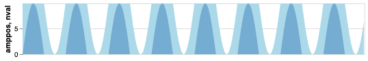
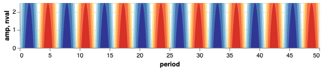
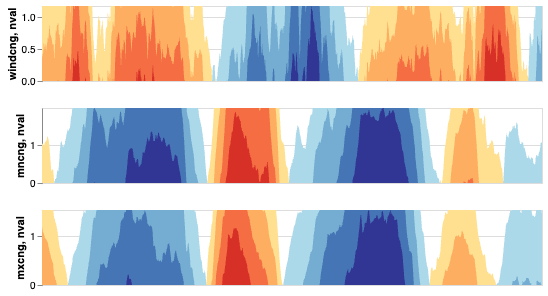

SIADS 522: Information Visualization I · University of Michigan · October 2025
This project was completed as part of SIADS 522: Information Visualization I at the University of Michigan. The goal was to build a generalized horizon chart renderer in Python and Altair from scratch — a chart type not natively supported by the library — capable of handling any time series input with configurable bands, colors, and axis formatting.
Horizon charts are a space-efficient technique for displaying dense time series data, commonly used in financial dashboards, climate visualization, and systems monitoring. Building one in Altair required understanding the chart type at a construction level — not just what it looks like, but the exact layering and clipping mechanics needed to produce it programmatically from arbitrary input data.
Skills demonstrated in this project
A horizon chart compresses a time series area chart into a fraction of its height by slicing it into equal-height bands and overlaying them. Each band is assigned a progressively darker color — lighter for values near the baseline, darker for extremes — so color intensity encodes magnitude while the shape of the area encodes trend. The mirrored variant handles negative values by folding at zero: positive values are encoded in one color scale (blues), negative in another (oranges/reds), overlaid in the same compact view.
What looks like a single chart is actually multiple Altair area layers — one per band — each clipped to its own domain and offset by the appropriate band height. The viewer sees one compact visualization; the renderer is assembling it layer by layer.
The renderer is built around a single public function, horizonChart(), supported by five helper functions that each own one piece of the construction pipeline. This keeps the main function readable and each concern independently testable.
Raises descriptive exceptions for empty dataframes, non-numeric columns, and null values before any rendering attempt is made.
Classifies the series as all-positive, all-negative, or mixed — determining which band construction paths are activated downstream.
Checks that the requested band count doesn't exceed the number of available colors, raising a clear exception if it does.
Calculates band height from the actual data range rather than hardcoding values, so the chart scales correctly to any input series.
Constructs a single Altair area layer for a given band index — handling offset calculation, domain clipping, and color assignment for both positive and negative directions.
Each band is an Altair area chart with clip=True and a fixed domain on the y-axis equal to [0, band_height]. For band i, the underlying values are offset downward by band_height × i using Altair's transform_calculate — so the first band shows values from 0 to the band height, the second folds values from band_height to 2× band_height back into the same vertical space, and so on. All bands are then composed using Altair's layer operator (+) in a loop, producing a single chart object that renders as one cohesive visualization.
Mixed positive/negative series require separate band stacks for each direction. The function generates positive bands from the raw values and negative bands by negating them, then composes both stacks into one chart. Band heights for each direction are calculated independently from the actual positive and negative ranges, so asymmetric data renders correctly without distortion — a series ranging from -2 to +10 won't have equal-height bands on both sides.
Default Altair area interpolation produces visual artifacts when negative values are introduced — it draws connecting lines between points in ways that incorrectly cross the zero axis. The renderer uses interpolate='monotone' throughout, which preserves the shape of the series while eliminating these crossing artifacts across both positive and negative band layers.
Rather than failing silently or producing a malformed chart, the renderer surfaces a custom exception with a descriptive message for each failure mode: empty dataframe, non-numeric column, all-zero values, and band count exceeding available colors. This makes the function behave like a proper library interface rather than a notebook script.
The renderer was validated against four input types: positive-only, negative-only, mixed positive/negative, and real-world multi-series weather data.
A shifted sine wave with all-positive values. The lighter blue band covers the first range; the darker blue covers the second. Peaks appear darker as they exceed the first band threshold — amplitude is readable from color intensity without needing to read the y-axis.

The full sine wave rendered with 4 bands per direction. Blues encode positive values; reds and oranges encode negative. The oscillation is immediately readable in a compact height, and color intensity makes amplitude variation visible at a glance without reading axis values.

Three horizon charts stacked vertically, each showing the rolling percentage change in a different weather metric over time. This is the primary use case for horizon charts: comparing multiple dense time series in the vertical space a single standard chart would normally occupy. All three series are simultaneously visible without overlap or scale distortion.
